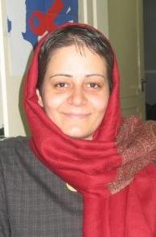

پذيرش > اخبار > مخالفت با لايحه حمايت از خانواده تشديد شد/محبوبه حسین زاده/روزنامه اعتماد


 مخالفت با لايحه حمايت از خانواده تشديد شد/محبوبه حسین زاده/روزنامه اعتماد مخالفت با لايحه حمايت از خانواده تشديد شد/محبوبه حسین زاده/روزنامه اعتماد
12 آذر 1386 - - نسخه قابل چاپ
اعتراض به لايحه حمايت از خانواده وارد دور جديدي شده است. اگر تا پيش از اين و در چند ماه گذشته، نقد و اعتراض به اين لايحه در منازل فعالان جنبش زنان برگزار مي شد، اما اين بار بحث به فضاهاي عمومي کشيده شد و براي اولين بار نشستي در سالن کنفرانس فرهنگسراي بانو برگزار شد. هرچند اعضاي شرکت کننده در اين نشست از گرايشات و گروه هاي مختلف فکري و سياسي بودند، اما همگي در مخالفت با مواد اين لايحه با هم هم عقيده بودند.
سخنرانان اين نشست که از سوي سازمان «سلامت و امنيت زنان و خانواده» برگزار شده بود، در سه محور ديدگاه اسلامي، فقهي و حقوقي، آسيب شناسي خانواده، روند مباحث زنان در داخل و تاثير لايحه حمايت از خانواده بر وجهه جهاني ايران به بيان نظرات و مخالفت خود با اين لايحه پرداختند.
اميرعلي احمدي عضو هيات علمي دانشگاه تهران گفت؛ «خانواده چندزني که به مرد امکان مي دهد در يک زمان واحد، چند زن داشته باشد گامي به عقب در تحولات تدريجي خانواده تلقي مي شود. چون هرچند در سير تکامل خانواده با خانواده هاي چندهمسر به ويژه در کشورهاي اسلامي روبه رو بوده ايم اما اين موضوع يک استثنا در متن خانواده جهاني محسوب مي شود. در لايحه حمايت از خانواده بر اينکه اين استثنا قانوني شود تاکيد شده و اين گامي به عقب و مخالف موازين خانواده در تمام جهان است.»
وي افزود؛ «مادر يا زن در درون خانواده به کانون مناسبات خانوادگي تبديل مي شود يعني تمام مناسبات عاطفي بر پايه جايگاه مادر در درون خانواده سامان مي يابد و تصور اينکه خانواده داراي دو يا چند کانون باشد از لحاظ منطقي مي تواند داراي ايرادات ساختاري باشد. در صورتي که در خانواده پدر نباشد يا حضور کم رنگ تري داشته باشد مسلماً خانواده داراي زيرگروه هاي مختلفي خواهد شد که هر کدام سازمان متفاوتي از خانواده اصلي خواهند داشت.»
اين جامعه شناس در ادامه گفت؛ «امروز ديگر تصور اينکه خانواده يي داشته باشيم که در شکل سنتي زن و مرد نقش هاي مشخصي داشته باشند و خانواده بتواند هماهنگ کار کند، غيرممکن است مخصوصاً اينکه در ايران برخلاف بسياري از کشورها، بخش اعظمي از وظايف سازمان هاي ديگر بر خانواده ها تحميل شده است مثلاً به دليل ضعف آموزش و پرورش، خانواده ها مجبورند در خانه زمان زيادي را براي آموزش و رسيدگي به امور تحصيلي فرزندان شان صرف کنند و مسلماً در اين شرايط خانواده هايي که با کمرنگ بودن نقش مردان روبه رو هستند با آسيب هاي مختلفي روبه رو مي شوند.»
وي افزود؛ «از بعد جامعه شناسي حقوقي هم اين بند از لايحه قابل تحليل است و به گفتماني از جامعه متصل مي شود که جايگاه و توجيهات خاصي براي خودشان قائل هستند و اين امر به کل جامعه ايران قابل تعميم نيست. اين گفتمان با گفتمان عمومي موجود در جامعه و رشد آگاهي هاي زنان مطابقت ندارد. از سوي ديگر در اين لايحه به تمکن مالي مرد و تعهد به برقراري عدالت از جانب وي تاکيد شده است و اين يعني تاکيد بر عدالت اقتصادي در حالي که صرف وجود عدالت اقتصادي باعث برقراري عدالت خانوادگي نخواهد شد. با اين لايحه نه عدالت جنسي رعايت مي شود و نه عدالت عاطفي و اين امر با مقتضيات خانواده يي که مهم ترين کارکرد آن ايجاد يک محيط امن و عاطفي با تشريک مساعي و کاهش فشارهاي بيرون براي آماده شدن افراد براي حضور در فعاليت هاي اجتماعي است، همخواني ندارد.»
مسعود گلچين عضو هيات علمي دانشگاه تربيت معلم سخنران بعدي اين نشست بود که گفت؛ «نبايد خانواده را نهادي در نظر گرفت که گويا به هر شکل وظيفه ثابت نگه داشتن آن را داريم. خانواده نيز جزيي از جامعه است، نه فراتر از ساير نهادها و بنيادها. با يک مشي حقوقي، قضايي، پليسي و نظارتي نمي توانيم جلوي آنچه را که به نظر نامطلوب مي آيد بگيريم و آنچه را که مطلوب به نظر مي رسد حمايت کنيم.»
وي افزود؛ «قانون بايد بازتاب شرايط موجود و افکار عمومي جامعه باشد، در حالي که چنين لايحه هايي نشان مي دهد مردم جلوتر از نظام حقوقي حرکت مي کنند. خانواده امروز نيازمند کاهش فشارهاي حاصل از کم کاري هاي ساختارهاي اجتماعي بر اين نهاد است و اين امر تحقق نمي يابد مگر آنکه فارغ از سياسي کاري و جبهه گيري حاد عاطفي و غيرعلمي به موقعيت قانون به عنوان بازتاب دهنده شرايط و افکار جامعه نگاه شود.»
عزت السادات ميرخاني فقيه و کارشناس فقه و حقوق اسلامي گفت؛ «در سيستم قانونگذاري ارتباط دقيق و مقاصد آيات در نظر گرفته نمي شود و در بسياري موارد يک جزء چاق مي شود و کلان ناديده گرفته مي شود. هميشه در موضوعات شرعي چه آنهايي که موافق هستند و چه مخالفان عمدتاً از جزء وارد مي شوند و به کلان بي توجه هستند.»
وي تاکيد کرد؛ «بايد توجه کرد که نمي توانيم يک نگاه جامد به سيستم قانونگذاري داشته باشيم. بعضي از احکام شناور هستند و حکمي در شرايطي واجب و در شرايطي ديگر حتي حرام مي شود. در قانون بايد تاکيد بر عدالت محوري باشد. محور قانونگذاري توحيدي، حق است و عدالت و در نظام تشريح و قانونگذاري هم بايد زيباترين چينش ها را داشته باشيم و کرامت، باورها، ارزش ها و اخلاق انساني مد نظر قرار گيرد.»
استاد دانشگاه امام صادق گفت؛ «در بحث تعدد زوجات، خداوند مي گويد اگر مي ترسي که به ميثاق اول خيانت کني، مراقب باش. در بحث تعدد زوجات قيود زياد است. هيچ انساني نمي تواند انسان ديگري را به لحاظ حقوقي معلق نگه دارد. پس هيچ انساني هم نمي تواند به واسطه منفعت خود يک گروه و به خصوص همسرش را معلق نگه دارد.»
ميرخاني افزود؛ «خاستگاه بسياري از قانونگذاري ها در قرآن مطالبات زنان است و افرادي که مي گويند اسلام يک شيوه مردسالاري و تحکم است اسلام را نفهميده اند. اصل عزت و استقلال افراد بايد در حريم زندگي فردي، خصوصي و خانوادگي رعايت شود.»
الهه کولايي، استاد دانشگاه تهران و کارشناس حقوق بين الملل، سخنران بعدي نشست گفت؛ «همواره در اين سال ها بحث تکريم زنان مطرح بوده و در اين مورد عبارات بسيار زيبايي تقديم جامعه شده است اما مشکل زماني است که اين عبارات زياد قرار است به قانون تبديل شود و در اينجا به اسم دين و خانواده لايحه يي به مجلس تقديم مي شود که اگر تصويب شود بايد فاتحه خانواده را در ايران خواند.»
کولايي گفت؛ «در انقلاب ما با ديدگاه هاي يک مرجع ديني روبه رو شديم که زن را به حوزه اقتصاد، سياست و جامعه فرا مي خواند در حالي که در همان زمان بودند مراجعي که مي گفتند جاي زن فقط در حوزه خصوصي است. حتي در پايان مجلس اول بعضي از مردان به امام خميني(ره) گفتند که جاي زن در مجلس شوراي اسلامي نيست و زن نبايد طرف مشورت قرار گيرد در حالي که رهبري امام و انقلاب اين ديدگاه را تغيير داده بود و اين ديدگاه به قانون اساسي هم انتقال يافت و تکليف هايي براي دولت براي رفع تبعيض از آحاد جامعه معين شد.»
وي افزود؛ «انقلاب ايران پاسخ نه بود به الگوهاي توسعه در جوامع شرقي و غربي و پاسخي بود براي به تکامل رساندن انسان ها بر اساس يک مدل ايراني اسلامي. پيامد اين انقلاب و ديدگاه امام خميني(ره) به زنان، افزايش انتظارات و خودباوري هاي زنان ايراني بود.»
کولايي گفت؛ «بحث زنان فقط بحث جامعه ما نيست. خشونت عليه زنان، زنانه شدن فقر و تبعيض عليه زنان يک بحث بين المللي است و ما با يک فشار بين المللي براي يکسان سازي و نفي هويت جوامع مختلف روبه رو هستيم و معتقدند الگوهاي نجات زنان را غرب ارائه مي کند. در اين شرايط چه چيزي به کشور ما ايمني مي دهد؟ الگوي کشور ما براي اين رفع تبعيض دروني و بر اساس ديدگاه هاي حضرت امام بر پايه هويت و کرامت زن است.»
وي افزود؛ «جامعه براي خروج از عقب ماندگي احتياج به حضور زنان دارد اما اين لايحه با فرهنگ جامعه ما سازگار نيست؛ لايحه يي که عدالت را که يکي از مهم ترين مباني ديني ما است در حد يک موضع صرفاً اقتصادي کاهش مي دهد. با اين لايحه بناي خانواده در جامعه ايراني متزلزل خواهد شد.»
روزنامه اعتماد
ارسال به
بالاترین
،
توییتر
،
فریندفید
،
فیسبوک
در همين بخش :
 پروین ذبیحی برنده جایزه حقوق بشری سازمان غيردولتى اتريشى سودويند شد پروین ذبیحی برنده جایزه حقوق بشری سازمان غيردولتى اتريشى سودويند شد
پخش کارت پستال و بروشور در روز جهانی زن در تهران
تمدید زمان برای امضای بیانیهی جمعی از فعالان زن به مناسبت هشت مارس
مجوزی که در نطفه خفه شد
بیش از 2000 امضا در اعتراض به تبعیض های آموزشی به مجلس تحویل داده شد
ديگر بخش ها :
طرح یک میلیون امضا
|
مقالات
|
سایت نوشته ها
|
اخبار
|
گزارش كمپين
|
گفت و گو
|
علیه سکوت
|
كوچه به كوچه
|
نامه های شما
|
گزارش ویژه
|
گفتگو با اعضا
|
ویژه سالگرد کمپین
|
تصویر برابری
|
دل آرام علی
|
تریبون
|
مقالات
|
تاریخ شفاهی
|
خارج از چارچوب
|
کتابخانه
|
درباره کمپین
|
کمپین در شهرها
|
کمپین در بند
|
صدای تغییر
|
ویژه 22 خرداد
|
لایحه حمایت از خانواده
|
گالری
|
عشا مومنی
|
امیر یعقوبعلی
|
خدیجه مقدم
|
راحله عسگری زاده و نسیم خسروی
|
پروین اردلان،جلوه جواهری، مریم حسین خواه، ناهید کشاورز
|
زینب پیغمبرزاده
|
سعیده امین، سارا ایمانیان، محبوبه حسین زاده، ناهید کشاورز و همایون نامی
|
احترام شادفر
|
نسیم سرابندی زاده،فاطمه دهدشتی
|
وبلاگ مهمان
|
پرونده خرم آباد
|
دستگیری ها
|
مریم مالک
|
پرستو اللهیاری
|
مهرنوش اعتمادی
|
سمیه رشیدی
|
Other Languages
|
همراهان
|
«فراخوان کمپین ده روز با بهاره هدایت»
| English
|